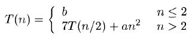

Let A and B be two n x n matrices. The product matrix C=AB is also an n x n matrix who's ith and jth element is formed by taking the elements in the ith row of A and the jth column of B and multiplying them to get
for all i and j between 1 and n. To compute C(i,j) using this formula, we need n multiplications.
As the matrix C has n2 elements, the time for the resulting matrix multiplication algorithm, which we refer to as conventional method
is Ɵ(n3).
The divide and conquer strategy suggests another way to compute the product of two n x n matrices.
For simplicity we assume that n is the power to 2,
that is there exists a non-negative integer k such that n=2k.
The product of A abd B be can be computed by using above formula for the product of 2 x 2 matrices as
C11=A11B11 + A12B21
C12=A11B12 + A12B22
C21=A21B11 + A22B21
C22=A21B12 + A22B22
Volker Strassen has discovered a method to compute the Cij of the above equations using only 7 multiplications and 18 additions or substractions.
His method involves first computing 7 matrices P, O, R, S, T, U and V.
P=(A11 + A22)(B11 + B22)
Q=(A21 + A22)B11
R=A11(B12 - B22)
S=A22(B21 - B11)
T=(A11 + A12)B22
U=(A21 - A11)(B11 + B12)
V=(A12 - A22)(B21 + B22)
C11=P + S - T + V
C12=R + T
C21=Q + S
C22=P + R - Q + U
The resulting recurrence relation for T(n) is.

where a and b are constants. Working with this formula we get
T(n)= an2[1 + 7/4 + (7/4)2+..+(7/4)k-1]+ 7k T(1)
= cn2(7/4)log2n + 7log2n, c a constant
= cnlog24 + log27 - log24 + nlog27
= O(nlog27)
≈ O(n2.81)